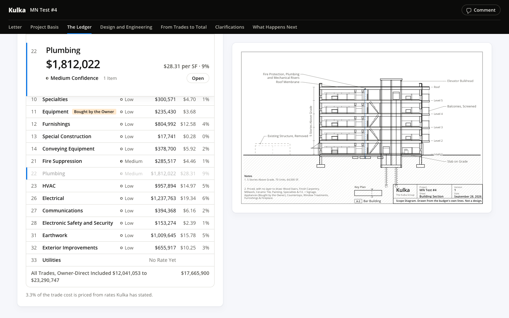
01-ledger-closed · 1440 · first screen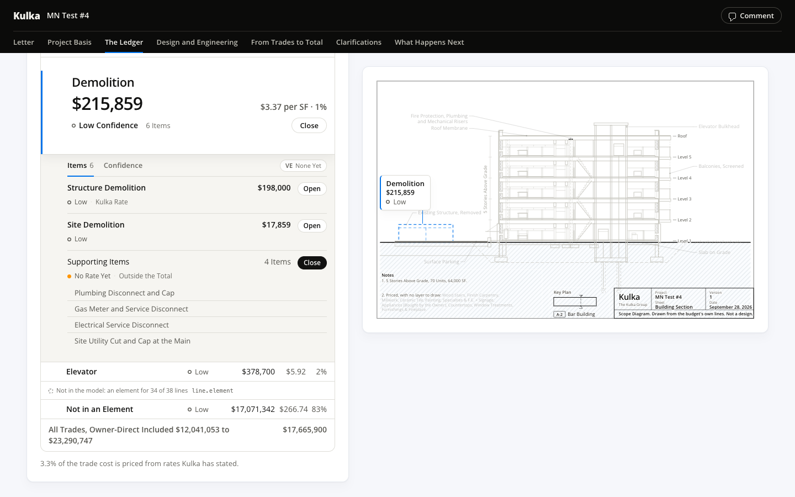
01b-ledger-by-element · 1440 · first screen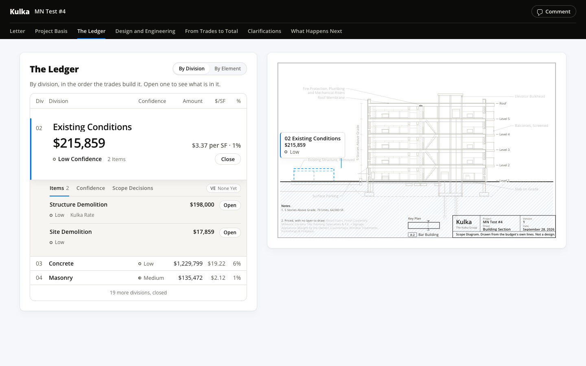
02-division-open · 1440 · first screen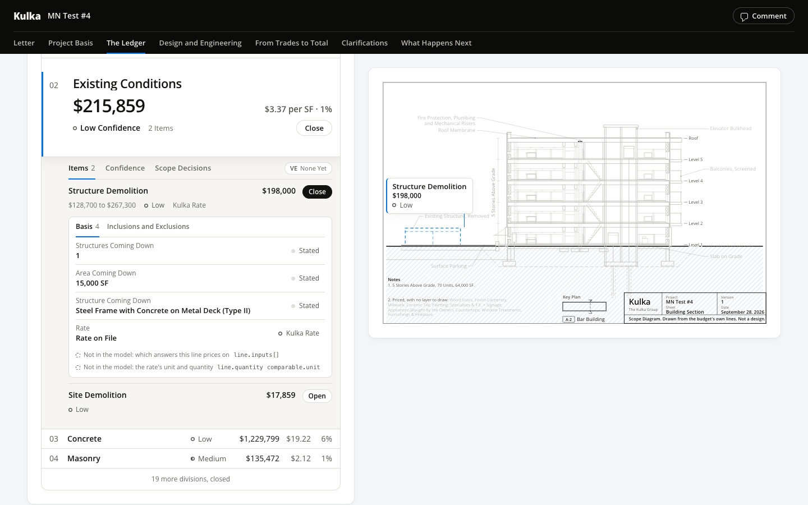
03-item-open · 1440 · first screen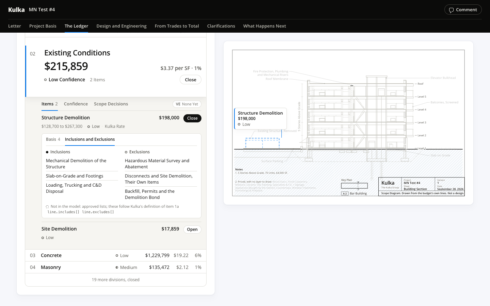
03b-item-scope · 1440 · first screen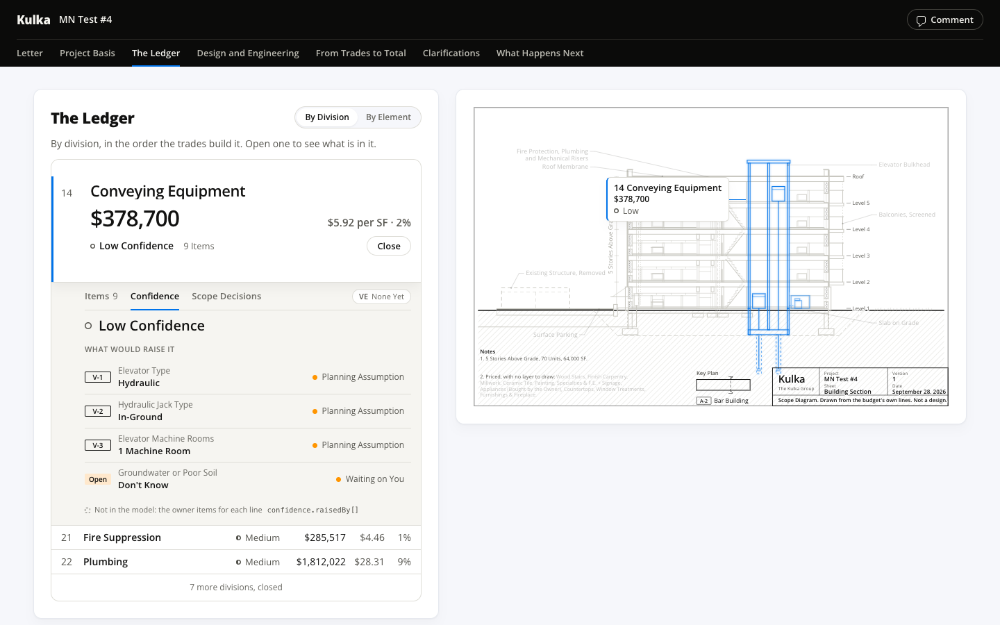
04-confidence · 1440 · first screen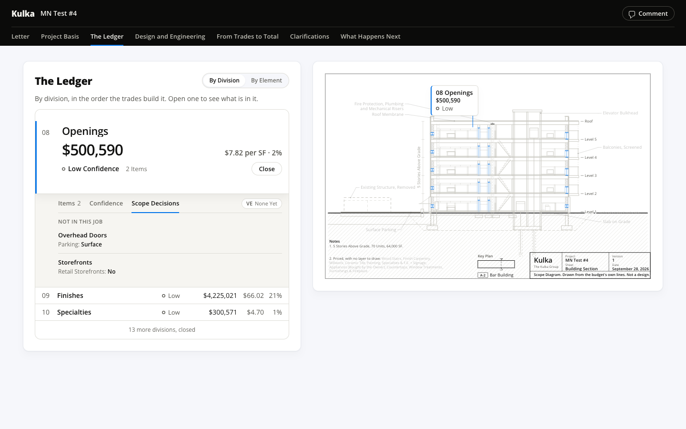
04b-scope-decisions · 1440 · first screen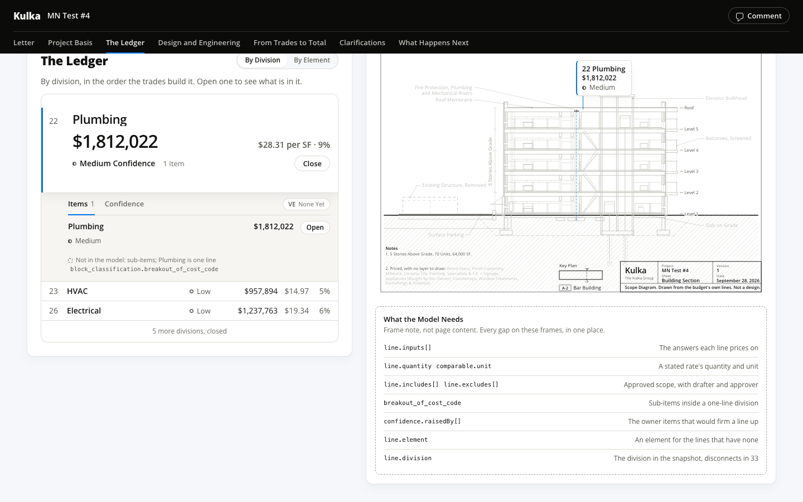
05-division-gaps · 1440 · first screen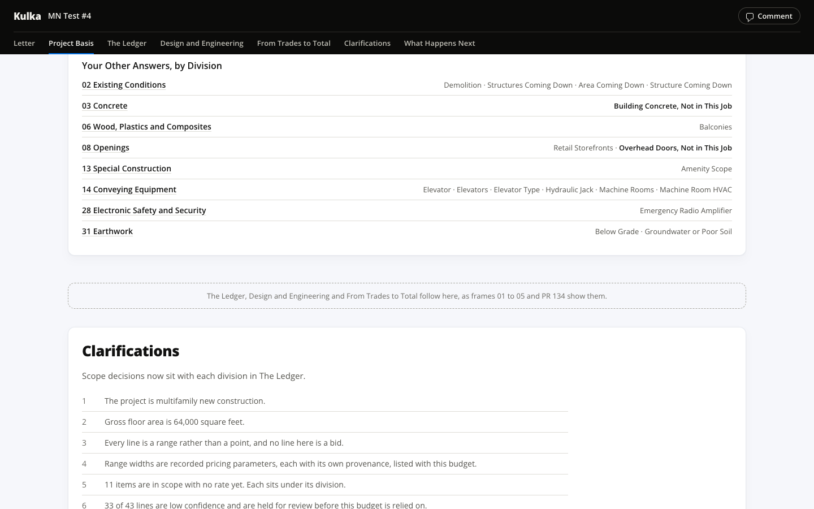
06-where-sections-go · 1440 · first screen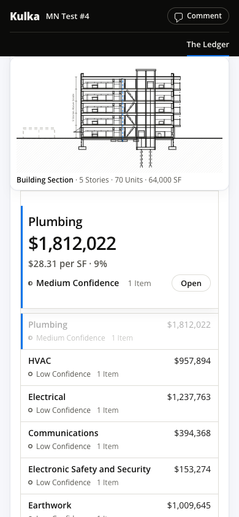
01-ledger-closed · 390 · first screen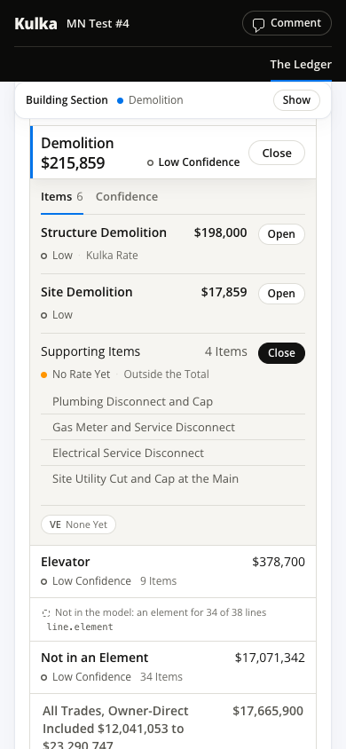
01b-ledger-by-element · 390 · first screen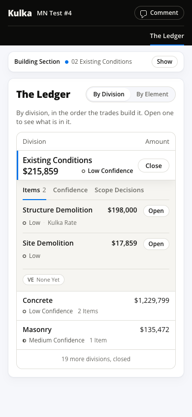
02-division-open · 390 · first screen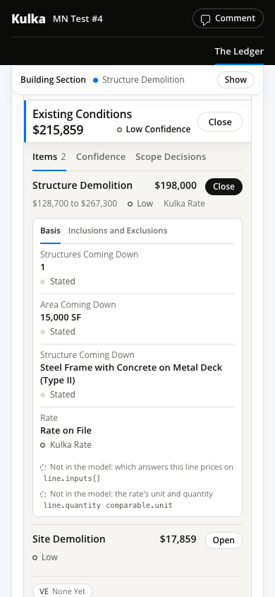
03-item-open · 390 · first screen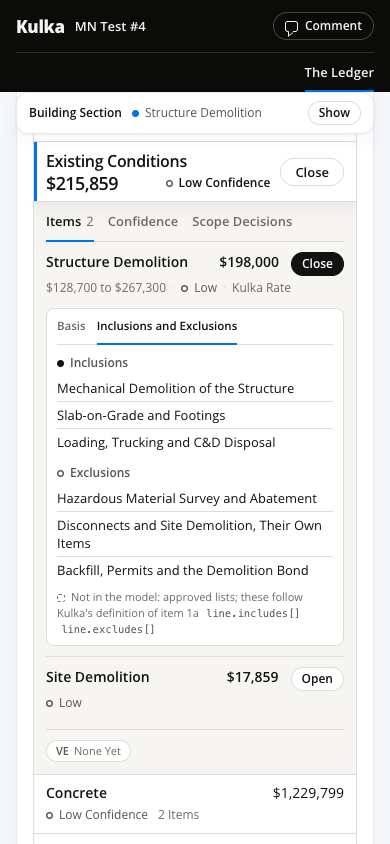
03b-item-scope · 390 · first screen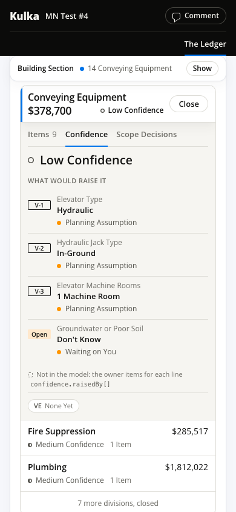
04-confidence · 390 · first screen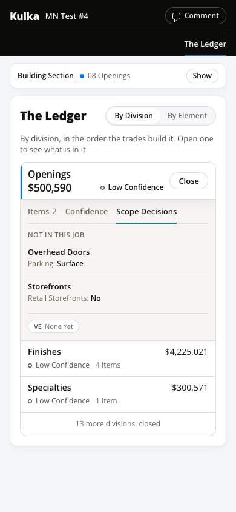
04b-scope-decisions · 390 · first screen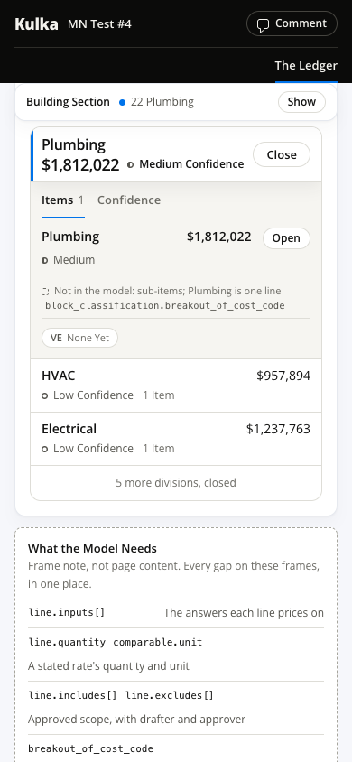
05-division-gaps · 390 · first screen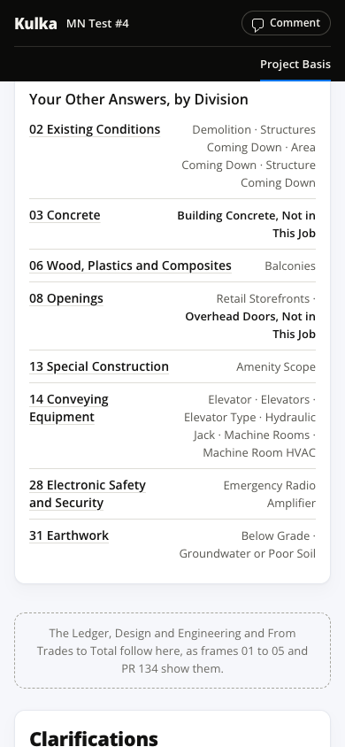
06-where-sections-go · 390 · first screen